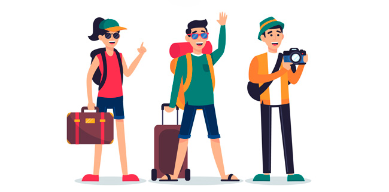

<ion-app>
  <ion-split-pane when="sm" content-id="main-content">
    <ion-menu content-id="main-content">
      <ion-header>
        <ion-toolbar color="primary">
          <ion-title>Home</ion-title>
        </ion-toolbar>
      </ion-header>
    </ion-menu>

    <div class="ion-page" id="main-content">
      <ion-header>
        <ion-toolbar>
          <ion-buttons slot="start">
            <ion-menu-toggle>
              <ion-button>
                <ion-icon slot="icon-only" name="menu"></ion-icon>
              </ion-button>
            </ion-menu-toggle>
          </ion-buttons>
          <ion-title>TURIX XD</ion-title>
        </ion-toolbar>
      </ion-header>
      <ion-content class="ion-padding">
        <h1>WELCOME TURIX XD</h1>
        <p>In Turix xd you will live an incredible experience in different parts of the world, the possibility of discovering new emotions and the city is within your reach.</p>
        
      </ion-content>
    </div>
  </ion-split-pane>
</ion-app>